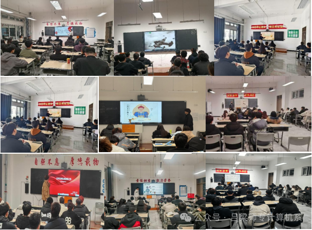
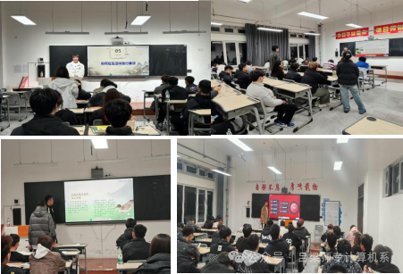

怀清廉精神 建美好校园
在华夏大地上，清廉官吏的故事犹如璀璨星辰，照亮了历史的长河。其中，被誉为天下第一廉史的于成龙，正是来自我们身边的吕梁大地。他的一生，清廉如水，品行高洁，深受百姓的爱戴与敬仰。本次清廉校园主题团日活动，各班以于成龙生平经历为切入点，用生动形象的语言，向同学们深情讲述了他一生坚守清廉的感人故事。在同学们价值观形成的关键时期，为他们树立起一个鲜活的道德榜样，让清廉之光照亮他们的前行之路。
此外，活动还围绕“如何在大学生活中践行清正廉洁”这一话题展开了热烈的讨论。同学们各抒己见，纷纷表示要学习于成龙的清廉精神，以身作则，时刻保持清醒的头脑，坚守自己的原则和底线，不为任何利益所动摇。他们深知，作为新时代的大学生、清廉校园的建设者，更应深挖当地清廉文化资源，传承和发扬吕梁清廉精神，积极传播清廉理念，让清廉之风在校园里蔚然成风。
古人云：“励操行以修德业，当自重；甘淡泊以守清贫，当自省。”清廉，这一中华民族的传统美德，已经深深植根于我们的文化血脉之中。无论历史如何变迁，时代如何发展，清廉风气始终具有强大的感召力。计算机系全体同学将从小事做起，从细节做起，以清廉之风涵养时代新风，以清廉之心树立文化之旗。让我们携手共进，怀清廉精神，筑梦美好校园！